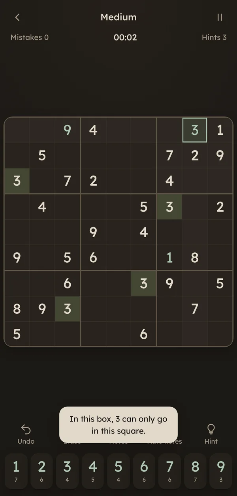

Notes and auto notes
Pencil in candidates yourself, or fill every empty square at once.
A Kindred Compass Games creation
A quiet place to think.
Classic sudoku in warm, restful colours, with soft piano music and nothing rushing you.
Coming to Google Play in two editions: Free, with a small banner, or Pro, one purchase with no ads and no subscription. Plays offline, no account needed. Release date to be announced.
Five real difficulties
Every puzzle has exactly one solution and is checked by a logical solver, so each level asks for the techniques its name promises, and you never have to guess.
Help when you want it
Pencil in candidates yourself, or fill every empty square at once.
Each hint shows the step: why only one number fits, or where a number must go.
Unlimited undo, with matching numbers, rows, columns and boxes highlighted.
Mistakes only lower your score. Turn on a 3 or 5 mistake limit if you like a challenge.
Your puzzle saves after every move. Take a call or restart your phone, then tap Continue.
Beat your own best scores, with solved count, finish rate and best time for each difficulty.
Made to be easy on the eyes
A soft sepia light theme, a warm dark theme, large clear numbers and a calm piano soundtrack you can turn down or off.
Ten languages
English · Français · Italiano · Deutsch · Español · Português · Русский · 简体中文 · 日本語 · 한국어
From the game
Actual Amber & Sage Sudoku 1.5.0 screens from the ad-free Pro edition.



Two editions
Free
The full game. A small banner at the top, and a short full-screen ad only between puzzles, never in the middle of one.
One purchase
The same game with no ads at all. No subscription, nothing between you and the puzzle.
Store links will be added here when Amber & Sage Sudoku is released.
← Back to Kindred Compass Games